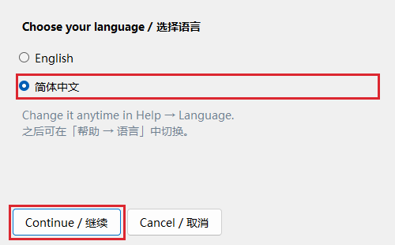
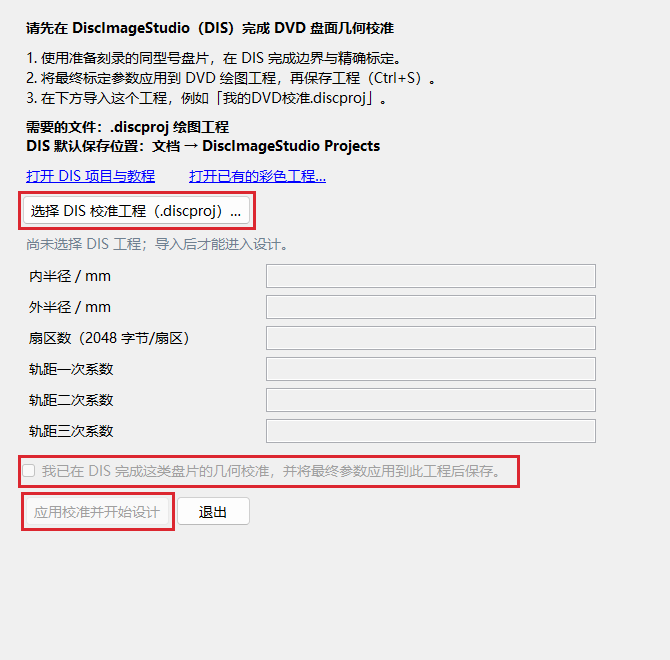
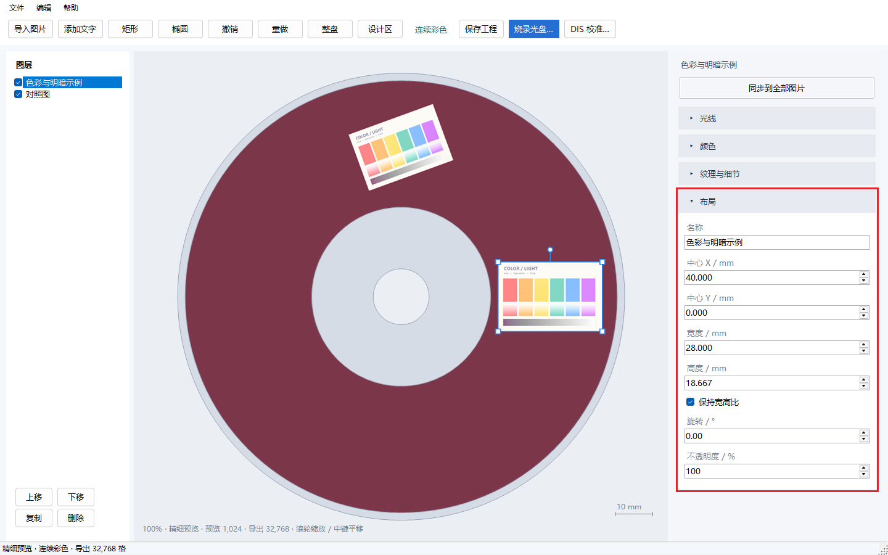
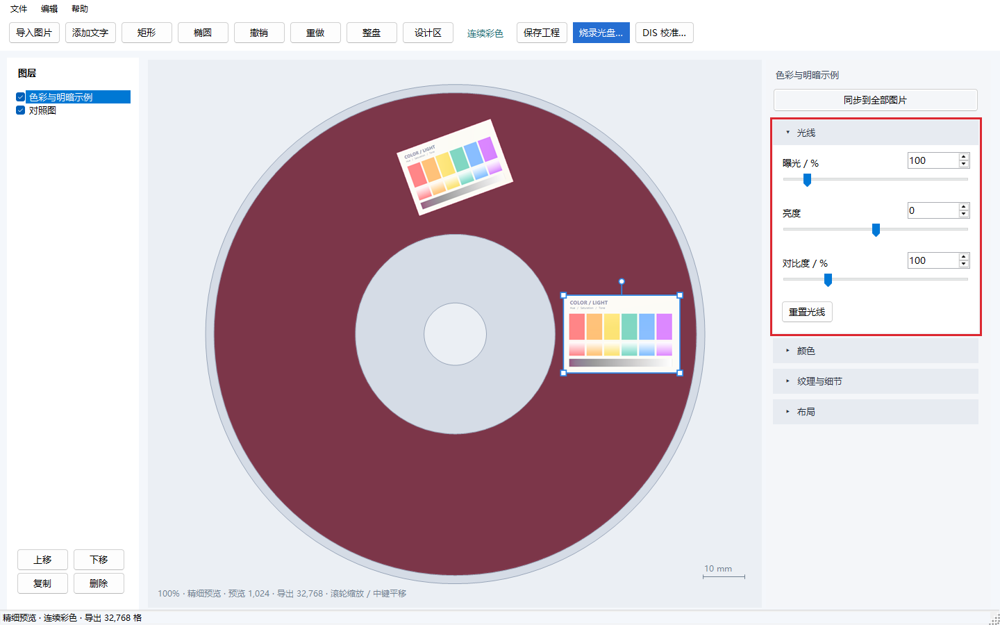
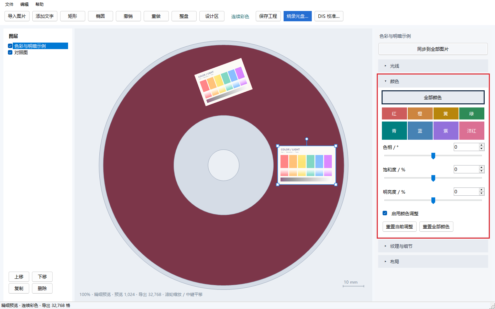
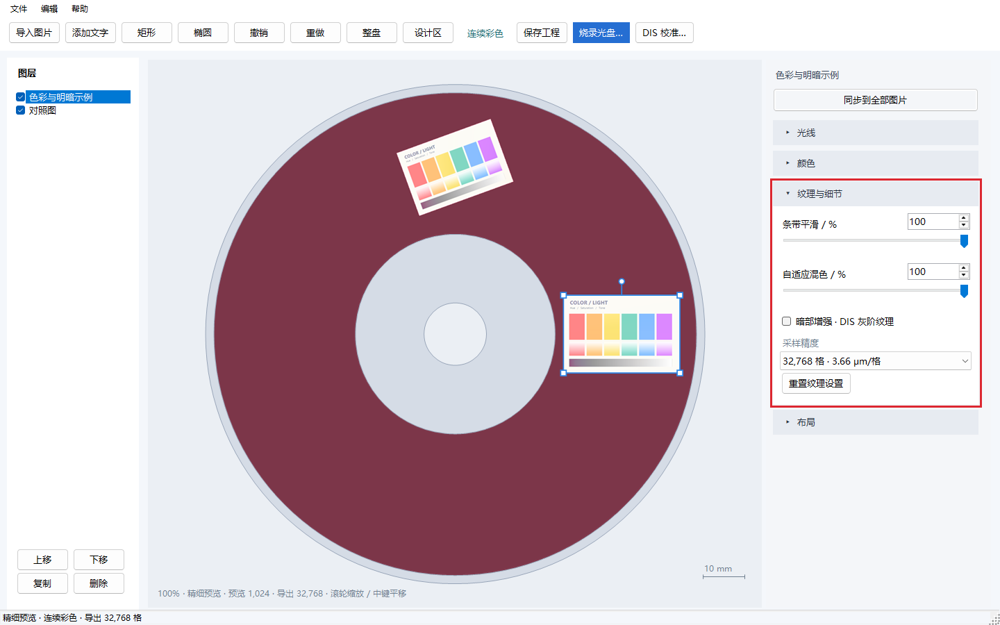
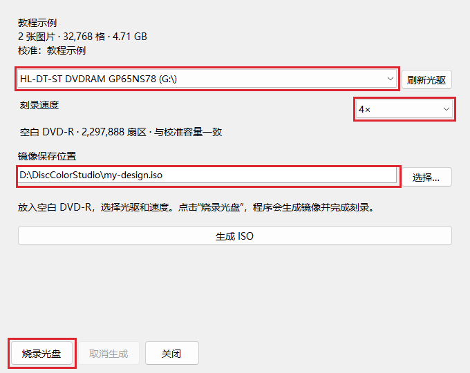

Disc Color Studio · 使用说明
软件仅支持新的空白单层 DVD-R（4.7 GB）。
按以下八步制作彩色光盘。截图中的红框标出对应控件，点击图片可放大。
1. 下载程序，准备盘片与光驱
- 从 Releases 打开最新版本，在 Assets 中下载名称含
win-x64.zip的 Windows 便携包。 - 将压缩包完整解压到一个文件夹，运行其中的
DiscColorStudio.exe。保留旁边的data、guide和其他程序文件。 - 启动时选择 简体中文，点击 Continue / 继续。程序记住上次选择；编辑时也可通过 帮助 → 语言… 即时切换。
- 准备支持 DVD-R 刻录的光驱、用于校准的盘片，以及一张用于正式设计的新空白单层 DVD-R。校准与正式刻录使用同型号盘片。
准备一盏白光 LED 灯，供完成后观察效果。

2. 在 DIS 完成几何校准，导入保存好的工程
几何校准用于确定光盘上“哪个数据位置对应哪个图像位置”。请先用 DiscImageStudio（DIS） 完成这一步。
- 按 DIS v1.4.0 校准教程 完成盘片标定：先确定初始几何参数，再进行边界与精确标定。
- 将最终标定参数应用到 DIS 的 DVD 绘图工程，按 Ctrl+S 保存，得到扩展名为
.discproj的文件，例如我的DVD校准.discproj。默认位置是 文档 → DiscImageStudio Projects。 - 启动 Disc Color Studio，在下面的引导窗口点击 选择 DIS 校准工程（.discproj）…，选中刚保存的文件。
- 程序会显示读取到的盘面参数。确认这个工程已应用最终标定结果，勾选确认框，再点 应用校准并开始设计。

程序会自动读取内半径、外半径、扇区数和三项轨距系数：前两项确定绘图环带，扇区数决定写入的数据容量，轨距系数描述螺旋轨道的位置变化。
校准结果会随彩色工程保存。以后启动时点 打开已有的彩色工程… 继续编辑；更换盘片型号时，点主界面顶部的 DIS 校准… 导入对应工程。
3. 导入图片，摆放到盘面上
- 点击左上角 导入图片，选择一张或多张图片；也可以把图片拖进窗口。
- 在画布上或左侧图层列表中点击图片。出现蓝色边框后，右侧面板调整的就是这张图片。
- 拖动图片移动位置，拖动四角缩放，拖动图片上方的圆形手柄旋转。把需要保留的内容放在盘面酒红色的可写环带内。
- 点击右侧 布局 标题展开面板，填写实际尺寸；例如宽度填
28，表示在盘上占 28 mm。保持 保持宽高比 勾选，可按原比例缩放。

| 控件 | 怎么使用 |
|---|---|
| 中心 X / Y | 以盘心为原点，单位为 mm；X 向右为正，Y 向下为正。需要对齐时直接填写数值。 |
| 宽度 / 高度、旋转 | 设置成品尺寸和方向。按住 Shift 拖动旋转柄，可按 15° 调整。 |
| 不透明度 | 默认 100%；减小后，图片会与下方图层或盘面背景混合。 |
| 左侧上移 / 下移 | 改变图层叠放顺序。勾选框控制图层显示，复制按钮可建立另一份对照。 |
| 添加文字、矩形、椭圆 | 在顶部工具栏添加，选中后在「布局」中编辑内容、尺寸与填充颜色。 |
| 整盘 / 设计区 | 切换查看范围；滚轮缩放画布，按住鼠标中键拖动平移。 |
连续彩色会自动根据图片内容和盘面位置选择观看方向与纹理配方。画布展示各张图片分别处于适合观看方向时的预测效果；实盘上通过转动盘片依次观看。
4. 在「光线」中调整整体明暗
选中图片，展开 光线，拖动滑块或输入数值调整明暗。

| 参数 | 作用 | 起步设置与调整方法 |
|---|---|---|
| 曝光 | 按比例放大或减小输入图像信号，100% 保持原值。 | 默认 100%。整体偏暗时，可从 110%～130% 试起；边调边看脸部、白底和高光的层次。 |
| 亮度 | 整体增加或减少亮度值。 | 默认 0。小幅提亮可试 +5～+10，需要压暗则向负值调。 |
| 对比度 | 调整亮部与暗部的差距。 | 默认 100%。画面发灰可试 110%～120%；想保留更多高光和暗部层次，可降到 90% 附近比较。 |
点击 重置光线 可恢复曝光 100%、亮度 0、对比度 100%。
5. 在「颜色」中调整整体和指定颜色
HSL 分别是 色相（Hue）、饱和度（Saturation）、明亮度（Lightness）。全部颜色 同时调整选中图片的所有颜色。八个颜色按钮按输入图片的色相划分区域，方便单独调整衣服、头发等颜色。
- 展开 颜色，保持 启用颜色调整 勾选。
- 默认选中 全部颜色，拖动三个滑块，调整整张图片的色相、饱和度和明亮度。
- 需要细调某类颜色时，点击对应按钮。例如紫色衣服先选 紫，偏粉紫的部分也可以调整 洋红。
- 再点 全部颜色 可继续整体调整。整体与各色通道的数值分别保留，并共同生效。

| 参数 | 作用与选择方法 |
|---|---|
| 色相 | 改变颜色倾向。「全部颜色」范围为 −180°～+180°，单个色彩通道为 −60°～+60°。默认 0°，先以 5°～10° 小幅调整。 |
| 饱和度 | 控制鲜艳程度，范围 −100～+100，默认 0。颜色较淡可从 +10～+20 试起。「全部颜色」调到 −100 时整图变为灰阶；增加饱和度时，中性灰保持中性。 |
| 明亮度 | 让颜色变亮或变暗，范围 −100～+100，默认 0，先以 5～10 为步长调整。「全部颜色」也会调整黑白灰区域。 |
程序先应用各色通道调整，再应用「全部颜色」调整。取消 启用颜色调整 可对照调整前后；重置当前调整 只复位当前选中的「全部颜色」或色彩通道，重置全部颜色 同时复位整体调整和八个通道。
6. 在「纹理与细节」中选择混色与精度
纹理是写入 DVD 的细密重复数据图样。程序根据实测色表选择和混合纹理，形成图片的颜色与明暗。

| 设置 | 做什么 | 怎么选 |
|---|---|---|
| 条带平滑 | 平滑相邻盘面角度之间的纹理配方过渡，减轻沿盘面出现的条状颜色分界。 | 先用 100%。需要比较过渡强弱时，复制一张图，将副本设为 50%。 |
| 自适应混色 | 把多种相近纹理分配到细密的小区域，用混合后的外观逼近中间色和渐变。 | 先用 100%。想比较较少混色的效果时，可将副本设为 50%，重点看肤色、渐变和轮廓。 |
| 暗部增强 · DIS 灰阶纹理 | 在亮度低、色彩较弱的区域加入 DIS 灰阶纹理，增强黑色衣服、阴影和深色轮廓。 | 默认关闭。深色区域偏亮或偏彩时，可开启，再检查暗部细节。 |
| 采样精度 | 控制生成镜像时，软件读取原图的空间密度。 | 一般图片从 32,768 格 开始；细线、小字较多时，可用 65,536 格 对照。 |
采样精度如何选择：
| 档位 | 软件采样间距 | 建议用途 |
|---|---|---|
| 32,768 | 约 3.66 μm / 格 | 日常绘图的起点。 |
| 65,536 | 约 1.83 μm / 格 | 细发丝、小字、精细轮廓的进一步对照。 |
| 131,072 / 262,144 | 约 0.92 / 0.46 μm / 格 | 高密度取样实验；额外清晰度收益尚未实测，生成镜像耗时更长。 |
“格”表示把 120 mm 宽的画布划分为对应数量的采样位置。窗口底部的 预览 数值用于交互显示，导出 数值用于生成镜像。
当前编码器通常沿轨道每约 2.13 μm 对一个可控数据字节取样（16 × 0.1333 μm）；同步码和纠错码区域会使部分取样间隔更大。相邻轨道的标称间距约 0.74 μm。更细的软件网格可减小边缘定位和取样误差，实际收益取决于图像、纹理和几何校准。0.46 μm 是软件采样间距；实盘图像的有效分辨率尚未测定。 编码实现
7. 做对照、同步设置，保存彩色工程
- 想在一张盘上比较效果：选中图片，点击左侧 复制（或 Ctrl+D），把副本移到另一处，再单独调整副本。
- 确定一套调整后，点击右栏上方的 同步到全部图片。当前图片的光线、整体与八色 HSL、纹理与采样设置会应用到所有图片，并用于后续导入的图片；各图的位置、尺寸、旋转和不透明度保持原值。
- 点击 保存工程（或 Ctrl+S），保存为
.discolor。图片素材、图层排版、调整参数和导入的 DIS 几何校准都会保存进去。
撤销 / 重做 支持 Ctrl+Z / Ctrl+Y；整次同步也可以撤销。
8. 生成镜像并烧录，转动盘片查看效果
- 将一张新的空白单层 DVD-R 放入光驱，点击顶部 烧录光盘…。
- 在光驱下拉框中选择刻录机。刚放入盘片时，可以点 刷新光驱 更新介质信息。
- 选择光驱提供的刻录速度。使用本项目已测试的 95058 盘片时，可从 4× 开始；自己的校准与正式刻录采用相同的速度，便于复现效果。
- 点击 选择… 设置镜像保存位置，例如
D:\DiscColorStudio\my-design.iso。为单层 DVD 镜像准备约 5 GB 可用磁盘空间。 - 点击 烧录光盘，程序会先生成 ISO，再写入光盘，完成后显示刻录结果。若想先保存镜像，点击旁边的 生成 ISO。

取出光盘，把数据面朝向白光 LED 灯和观察者。固定灯与观察位置，缓慢转动、轻微倾斜盘片，依次找到各张图颜色较好的姿态。项目首页的视频展示了这个寻找观看角度的过程。
三个文件各有什么用：
| 文件 | 来源与用途 |
|---|---|
.discproj |
DIS 保存的 DVD 绘图工程；在本程序开始设计时导入其中的几何校准。 |
.discolor |
本程序保存的彩色设计工程；以后打开它继续排版和调色。 |
.iso |
生成好的 DVD 数据镜像；用于写入光盘。 |
在 帮助 → 使用方法 中查看教程，也可直接打开便携包中的 使用说明.html（中文）或 UserGuide.html（英文）。